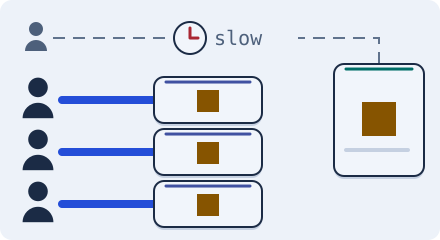

Scale the front · 3 minutes
Copies near users
A CDN keeps copies of files and pages close to people, so your servers see far fewer requests.
Open this lesson
Do not cross the world for a picture
A nearby copy saves the trip to origin only after it has the object. Try visitors at two different edges, then purge the copies.
Try the idea
Twenty thousand people a second want the same pages. Protect your servers with a CDN.
Key numbers
- Nearby copy
- ≈ 20 ms. approx.
- Typical CDN hit rate for static files
- ≈ 90 to 99 percent. approx.
- Sending data out to the internet
- ≈ $0.09 per GB. list price, approx.
Check your reasoning
Think through these questions before opening the lesson. In the game you can test the idea and compare your reasoning.
- What does a CDN hold?
- Which content is a poor fit for a CDN?
- What happens on a CDN miss?
The key point
Put copies of shared content near people; keep your servers for what only they can do.
Practise this idea
- Easy
Photo sharing
You are building a photo app. People post pictures and everyone else scrolls through them. Almost all the traffic is people looking at photos, and the photos take up far more room than anything else you store.
- Easy
Podcast hosting
You host shows for creators. Listeners press play and download big audio files, and creators upload a new episode now and then. The audio is the bill: every episode downloaded costs bandwidth.
- Easy
News site
You run a news site. Millions read the same few stories, and when something big happens almost everyone opens the same page in the same minute. Editors publish all day, and readers expect fresh headlines.
- Medium
Music streaming
People search for songs, build playlists and press play. The audio is the heavy part, and a hit song is played by millions at once. Playback must not stutter, even when part of your system fails.